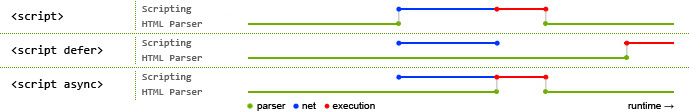

前端常见问题面试题总结
这篇文章会不定期更新一些前端面试题。
CSS 相关
- 选择器优先级
- 你知道哪些新的属性
- 盒模型
- BFC
- 概念
- 如何触发
- 如何应用
- 清除浮动的方法
- 如何实现三列布局
- flex 常见布局
- rem 单位换算
- CSS 渲染过程
- DOCTYPE 的作用
- 垂直居中
- 说一些你知道的 CSS 新特性
JS 相关
- 如何实现继承
- es5 实现 new
- 实现 instanceof 运算符
- 实现 isPrototypeOf 方法
- 简单实现 call
- 简单实现 apply
- 简单实现 bind
- 实现 eventEmitter
- 手写 Proxy / Object.defineProperty
- 实现双向绑定
- 事件委托
- Event Loop
- node 和浏览器的事件循环机制区别
- async 与 defer 的区别
- 如何封装一个组件（参考 antd）
- 说一些你知道的 JS 新特性
- 你知道哪些设计模式
- 如何遍历一棵树并对其优化
- 基本数据类型有哪些
- 数据类型转换
- 说说你遇到过什么难点，怎么解决的
- 怎么实现深拷贝浅拷贝
- 什么是闭包
- 手写一个 Promise
- Web Component
- this 指向
- jQuery 原理
- websocket 心跳机制
- 概述输入一个 url 到网页呈现的过程
- UDP 与 TCP 的区别是什么
- 三次握手和四次挥手详细介绍
- http 跨域
- HTTP 报文
- DNS 解析的详细过程
- 概述 http 的缓存控制（http2 与相关缓存控制）
- script 标签的属性有哪些
- script 标签的 defer 和 async 标签的作用与区别
- script intergrity 的作用
- 三大框架解决了传统 JQ 开发的哪些问题
- 前端性能提升，各个方面（server, front）
- cookie session 的区别
- 前端安全方面， xss，csrf
- 层次遍历一棵二叉树
- 字符串中找出最长最多重复的子串
- TCP 有哪些手段保证可靠交付
- 如何预防中间人攻击
- DNS 解析会出错吗，为什么
- ES6 的 Set 内部实现
- 如何应对流量劫持
- 算法：top-K 问题，分成 top-1,top-2,top-K 三小问
- webpack 的 plugins 和 loaders 的实现原理
- vue 和 react 谈谈区别和选型考虑
- webpack 如何优化编译速度
- 单元测试编写有哪些原则
- 一个大型项目如何分配前端开发的工作
- 柯里化通用实现
- two-sum
- typescript 有什么好处
- JWT 优缺点
- nginx 负载均衡配置
- 前端性能优化手段
- 针对 React 的性能优化手段
- 301 302 307 308 401 403
- vue 的 nextTick 实现原理以及应用场景
- 谈谈 XSS 防御，以及 Content-Security-Policy 细节
- mobx-react 原理
- forceUpdate 经历了哪些生命周期，子组件呢?
- React key 场景题：列表使用 index 做 key，删除其中一个后，如何表现？
- 算法：实现 setter(obj, ‘a.b.c’ ,val)
- 常见排序算法
- 不同前端技术栈的项目，如何实现一套通用组件方案？
- es6 新特性有哪些
- vuex, mobx, redux 各自的特点和区别
- react 生命周期
- serviceworker 如何保证离线缓存资源更新
- Vue3 proxy 解决了哪些问题？
- 发布订阅模式和观察者模式的异同
- CI/CD 流程
- Promise 串行
- symbol 应用
- 深拷贝
- dns 解析流程
- git rebase
- git cherypick
- cmd amd 区别
- antd 组件源码
- 现有的系统的优化和重构
- html5 最新规范
- 什么是前后端分离
- html 语义化
- 什么是 mvc
- sass 与 less 对比
- 前端构建环境
- 不同前端构建环境的对比，Grunt 与 Gulp
- 前端性能优化
- http 常用状态码
- 常见请求头
- http 的状态码中，499 是什么？如何出现 499，如何排查跟解决
- 如何遍历一个 dom 树
- HTTPS 的工作原理
- react fiber
- dns 更新策略
- dns 查找策略
- 项目难点
- 个人发展规划
- webpack 打包编译优化
- webpack 打包文件优化
- react 的 setState 原理
- react render 原理
- 类数组转数组的方法
- JS 的隐式转换
- DOM api
- 闭包解决循环的问题
- 函数节流
- Map Set Generator
- 浏览器的异步事件与 node.js 的异步事件有什么差别？
- arguments 为什么不是数组？
- redux 中间件，applyMiddleware
- thunk saga 原理
- 什么是 AST
- react 性能优化方法
- JS 常用 polyfill 实现
- require import 区别
- 什么是 WebSocket
- 说说 js 文件摆放顺序
- 说说 window.performance.timing api
- 浏览器阻塞
- js 引擎的工作原理，宏任务和微任务
- 函数的扩展性
- 怎样构建组件最合理科学
- 浏览器缓存策略
- 谈谈你了解的 es6
- js 基本数据结构和复杂数据结构
- js 实现单向双向循环链表，实现查找插入删除操作
- 你是如何理解前端架构的
- 说一说前端持续集成
- 说一说 http2
- nginx 配置
- 说一下前端发布流程
- Vue2.0 怎么实现双向绑定的
- Vue3.0 怎么实现双向绑定的
- Object.defineProperty() 和 proxy 的区别
- 你使用过哪些 Vue/React 全家桶，分别解决了什么问题
- Vue/React 的 diff 算法
- Vue 的 nexttick 实现的原理
对于 Vue/React/Angular 三大框架会使用哪些 api 是次要的，主要是要了解框架解决的问题和实现原理。 - webpack 和其他自动化构建工具（gulp、grunt、rollup）有哪些区别
- loader plugin 的区别，一开始被问到还有点惊讶，不同作用的功能被问到一起。
- tree-shaking 的工作原理
- code splitting 用的是什么插件
- 如何提高 webpack 构件速度的
- 利用 DllPlugin 预编译资源模块
- 使用 Happypack 加速代码构建
- webpack 和其他自动化构建工具（gulp、grunt、rollup）有哪些区别（https://juejin.im/post/5b10c6786fb9a01e7c27761b）
- webpack 的 loader 和 plugin 区别，举几个常用的 loader 和 plugin 并说出作用
- webpack 打包的过程
- webpack 打包之后生成哪些文件
- webpack 打包出来的文件体积过大怎么办
- webpack 热部署的原理
- webpack 打包速度过慢怎么办？
盒模型
margin，border，padding，content。
1 | .box { |
内联元素的 margin-left 和 margin-right 起作用，且会影响水平位置。margin-top 和 margin-bottom 不支持。
padding-left 和 padding-right 会影响水平位置，padding-top 和 padding-bottom 起作用但是不影响垂直距离。
border-left 和 border-right 影响水平位置，border-top 和 border-bottom 不影响垂直位置。
BFC
https://juejin.im/post/5909db2fda2f60005d2093db
概念
BFC(Block formatting context)直译为”块级格式化上下文”。它是一个独立的渲染区域，它规定了内部的 Block-level Box 如何布局，并且与这个区域外部毫不相干。
如何触发
- html 根元素
- float 不为 none
- position 为 absolute 或 fixed
- display: inline-block
- display: table-cell
- display: table-caption
- display: table，table-row，table-row-group，table-header-group，table-footer-group, inline-table
- display: flow-root
- contain: layout，content，或 strict
- display: flex 和 display: inline-flex
- display: grid 和 inline-grid
如何应用
- 自适应两栏布局
- 可以包含浮动元素——清除内部浮动
- 分属于不同的 BFC 时可以阻止 margin 重叠
CSS 渲染过程
解析 DOM-> 解析 CSSOM -> 结合为 Render Tree（忽略掉一些元素，如 display: none）-> layout -> paint -> composite
paint： 绘图通常在称为图层的多个表面上完成。分图层的好处是，一些经常需要重绘的元素（例如 transform）不会影响到其他的元素。
composite: 在此步骤中，浏览器将所有层组合在一起。
- layout -> paint -> compose 改变元素的尺寸时
- paint -> compose 改变元素的颜色时
- compose 例如改变元素的 transform 时
DOCTYPE 的作用
doctype 是一种标准通用标记语言的文档类型声明，目的是告诉标准通用标记语言解析器要使用什么样的文档类型定义（DTD）来解析文档。
DOCTYPE 声明是用来指示 web 浏览器关于页面使用哪个 HTML 版本进行编写的指令。
清除浮动的方法
如何实现三列布局
1. 纯浮动
1 | <div class="container"> |
1 | .left { |
2. overflow
1 | <div class="container"> |
1 | .left { |
3. 负值 margin
1 | <div class="content"> |
1 | .content { |
4. 负值 margin 与 relative
1 | <div class="container"> |
1 | .container { |
5. flex
1 | <div class="container"> |
1 | .container { |
6. table
1 | <div class="container"> |
1 | .container { |
flex 常见布局
1. 内容宽度等分
1 | <div class="container"> |
1 | .container { |
2. 左右布局，一侧定宽，一侧自适应撑满
1 | <div class="container"> |
1 | .container { |
JS 相关
如何实现继承
这里只列出最长用的继承方式
1 | function prototype(child, parent) { |
es5 实现 new
1 | function newOperator(ctor) { |
实现 instanceof 运算符
1 | function isInstanceof(ins, cons) { |
实现 isPrototypeOf 方法
1 | function isPrototypeOf(proto, ins) { |
简单实现 call
1 | Function.prototype.call2 = function(context) { |
简单实现 apply
1 | Function.prototype.apply2 = function(context, arr) { |
简单实现 bind
1 | Function.prototype.bind2 = function(context) { |
使用如下：
1 | function text() {} |
实现 eventEmitter
1 | class EventEmitter { |
实现双向绑定
Event Loop
脚本执行的时候，js 引擎会解析这段代码，将代码依次放入执行栈(Call Stack)，排队执行。遇到异步事件不会一直等待返回结果，而是会将这个事件挂起，继续执行执行栈中的其他任务。当事件返回后，js 会将事件加入到事件队列（Message Queue）中，被放入事件队列不会立即执行回调任务，执行任务必须在执行栈中。只有当执行栈中的任务都执行完成，主线程处于闲置状态，主线程会去查找事件队列中是否有任务，有的话，主线程会取出排在第一位的事并放入执行栈，然后执行同步代码。如此反复，就形成了一个循环（Event Loop）。
node 和浏览器的事件循环机制区别
任务队列
浏览器环境
浏览器环境下的 异步任务 分为 宏任务(macroTask) 和 微任务(microTask)：
宏任务(macroTask)：script 中代码、setTimeout、setInterval、I/O、UI render；
微任务(microTask)： Promise、Object.observe、MutationObserver；
宏任务(macroTask) 和 微任务(microTask) 会各自被放入对应的队列：宏队列(Macrotask Queue) 和 微队列(Microtask Queue) 中等待执行。
Node 环境
在 Node 环境中 任务类型 相对就比浏览器环境下要复杂一些：
microTask：微任务；
nextTick：process.nextTick；
timers：执行满足条件的 setTimeout 、setInterval 回调；
I/O callbacks：是否有已完成的 I/O 操作的回调函数，来自上一轮的 poll 残留；
poll：等待还没完成的 I/O 事件，会因 timers 和超时时间等结束等待；
check：执行 setImmediate 的回调；
close callbacks：关闭所有的 closing handles ，一些 onclose 事件；
执行过程
浏览器执行过程
先执行<script>中的同步任务，然后所有微任务，一个宏任务，所有微任务，一个宏任务……
执行完主执行线程中的任务；
取出 Microtask Queue 中任务执行直到清空；
取出 Macrotask Queue 中一个任务执行；
重复 2 和 3；
Node 执行过程
- 清空当前循环内的 Timers Queue，清空 NextTick Queue，清空 Microtask Queue；
- 清空当前循环内的 I/O Queue，清空 NextTick Queue，清空 Microtask Queue；
- 清空当前循环内的 Check Queue，清空 NextTick Queue，清空 Microtask Queue；
- 清空当前循环内的 Close Queue，清空 NextTick Queue，清空 Microtask Queue；
- 进入下轮循环。
async 与 defer 的区别

- 没有 defer 或 async
1 | <script src="script.js"></script> |
浏览器会立即加载并执行指定的脚本，“立即”指的是在渲染该 script 标签之下的文档元素之前，也就是说不等待后续载入的文档元素，读到就加载并执行。
- 有 async
1 | <script async src="script.js"></script> |
加载和渲染后续文档元素的过程将和 script.js 的加载与执行并行进行（异步）。
- 有 defer
1 | <script defer src="myscript.js"></script> |
加载后续文档元素的过程将和 script.js 的加载并行进行（异步），但是 script.js 的执行要在所有元素解析完成之后，DOMContentLoaded 事件触发之前完成。
如何遍历一棵树并对其优化
- 深度优先
1 | function DFSTree(node, depth, index, action) { |
- 广度优先
1 | function BFSTree(root, action) { |
- 二叉查找树
1 | class Node { |
基本数据类型有哪些
变量可以存放两种类型的数据：原始类型和引用类型
JavaScript 其中 6 种基本数据类型分别是：Undefined, Null, Boolean, String, Number, Symbol。
引用类型： Object。
数据类型转换
- 原始类型之间转换
| 原始类型 | 转换类型 | 结果 |
|---|---|---|
| number | boolean | 0 => false, NaN = > false, 其他 => true |
| number | string | 1 => ‘1’, NaN => ‘NaN’ |
| boolean | number | true => 1, false => 0 |
| boolean | string | true => ‘true’, false => ‘false’ |
| string | number | ‘1’ => 1, ‘1a’ => NaN |
| string | boolean | ‘’ => false, 其他 => true |
| null | number | 0 |
| null | boolean | false |
| null | string | null |
| undefined | number | 0 |
| undefined | boolean | false |
| undefined | string | null |
| Symbol | number | TypeError |
| Symbol | boolean | true |
| Symbol | string | TypeError |
- 对象转换
对象转原始类型：
- 如果对象中存在 toString(valueOf) 方法，且其方法返回原始类型，则返回这个结果。
- 如果对象中不存在 toString(valueOf) 方法，则调用 valueOf(toString) 方法，如果 valueOf(toString) 方法存在且返回原始类型，则返回 这个结果。
- 否则，抛出错误。
注意，上边的规则 toString 和 valueOf 可以互相替代。视情况而定。如果对象转 number，则先调用 valueOf， 如果对象转 string，则先调用 toString。
- 四则运算
两个数据类型相加操作的转换逻辑如下：
先调用自身的 toPrimitive 方法，
如果结果中有一个是 string 类型则转换成 string，最后拼接。
如果结果中都不是 string 类型则转换成 number，最后相加。
伪代码如下：
1 | a + b: |
对象转其他类型：
1 | var obj = { |
运行：
1 | "" + obj; |
以 "" + obj 为例进行讲解：
因为有 + 操作符的默认两边为 Number，所以 obj 会先调用 valueOf 方法
什么是闭包
闭包是由函数以及创建该函数的词法环境组合而成。这个环境包含了这个闭包创建时所能访问的所有局部变量。
this 指向
- 带点调用则指向点之前的对象
- 直接调用则指向 window
- 使用 call 和 apply 可以改变 this
- 数组形式调用指向数组（
arr[0]()指向 arr）
考题 1：
1 | let length = 10; |
解析：
- 最外层 length 是用 let 创建，所以不会挂在到 window 上。
fn()形式调用属于直接调用，所以内部 this 指向 window， window.length 含义是页面中有多少个 iframe，这里为 0；arguments[0](), 调用类似于数组形式（arr[0]()），所以内部函数指向 arguments，arguments.length 的长度为 method 方法的参数个数，这里为 2。
考题 2：
1 | var fullname = "John Doe"; |
解析：
obj.prop.getFullname()为点调用，所以 this 指向点之前的对象，这里为obj.prop，fullname 为 “Aurelio De Rosa”；obj.prop.getFullname把地址赋值给test，test()调用为直接调用，所有内部 this 指向 window，fullname 为”John Doe”
手写一个 Promise
1 | // 一个最简单的 Promise 实现 |
使用如下：
1 | var aa = new Promise2((resolve, reject) => { |
概述输入一个 url 到网页呈现的过程
- 浏览器查找域名对应的 IP 地址；
- 浏览器根据 IP 地址与服务器建立连接；
- 浏览器与服务器通信： 浏览器请求，服务器处理请求；
- 浏览器与服务器断开连接。
DNS 查找
以查询 www.google.com 为例
- 浏览器搜索自己的 DNS 缓存
- 搜索操作系统中的 DNS 缓存（hosts 文件）
- 操作系统将域名发送到本地域名服务器（LDNS），LDNS 查找自己的缓存
- LDNS 向根域名服务器（根域名服务器，其虽然没有每个域名的的具体信息，但存储了负责每个域，如 com、net、org 等的解析的顶级域名服务器的地址）发起请求，根域名服务器返回顶级域名服务器的地址，这里返回 com 域名的地址
- LDNS 向顶级域名服务器发起请求，返回 google.com 域名服务器地址
- LDNS 向 google.com 域名服务器发起请求，成功找到 www.google.com IP，并返回给操作系统，LDNS 再将地址缓存
- 操作系统将 IP 返回给浏览器，同时也缓存一份
建立连接-三次握手
网页请求与显示
- 浏览器发送请求到服务器
- 服务器定位文件位置，类型返回相应的 html 文件
- 浏览器在没有完全接收 html 就开始渲染、显示页面
- 在解析 html 代码时，根据需要继续请求 js、css、image 等资源
CSS 下载不会阻止 DOM 解析，但会阻止 DOM 渲染和 JS 执行。
浏览器缓存
浏览器加载资源时，根据 http header 来判断是走强缓存还是协商缓存。
- 首先 浏览器会检查资源的 Cache-Control 或 Expires，如果未过期则直接拿本地缓存（Cache-Control 优先级高于 Expires，可同时存在或者只存在一个）
- 如果强缓存过期，浏览器会发起请求，请求中会带上 If-None-Match 和 If-Modified-Since。If-None-Match 为第一次请求时 response header 中的 ETag 值，类似一个资源的 hash，如果资源变动则 hash 值会改变。If-Modified-Since 为第一次请求时 response header 中的 Last-Modified 值，代表文件最后一次修改的时间。
- 服务端首先判断 If-None-Match 是否改变，如果不变则 304 返回，如果没有 If-None-Match，则判断 If-Modified-Since 是否改变，如果不变则 304 返回，否则 200 返回
断开连接-四次挥手
UDP 与 TCP 的区别是什么
UDP： 不可靠、高效、单播多播广播，多用于直播（但也有很多直播是 TCP 实现的）
TCP： 可靠、需要先建立连接
- UDP 协议是面向无连接的，也就是说不需要在正式传递数据之前先连接起双方；
- UDP 协议只是数据报文的搬运工，不保证有序且不丢失的传递到对端，并且 UDP 协议也没有任何控制流量的算法，总的来说 UDP 相较于 TCP 更加的轻便。
- TCP 建立连接和断开连接都需要进行握手，在传输数据数据的过程中，保证数据的可靠，带来的问题是相比 UDP 不够高效。
TCP 头部字段：
- Sequence Number 保证 TCP 传输的报文是有序的，对端可以通过序号拼接报文
- AcknowledgementNumber 表示期望接收到的下一个字节的编号是多少，也表示上一个字节已经接收到
- 序列号（Sequence Number）为当前端成功发送的数据位数，确认号（AcknowledgementNumber）为当前端成功接收的数据位数，SYN 标志位和 FIN 标志位也要占 1 位
- Window Size 表示还能接收多少数据，用于流量控制
标志位
- SYN：创建一个连接
- SYN & ACK：ACK 表示确认接收到客户端的 SYN 包，SYN 用来表示服务端也希望建立 TCP 连接
- 客户端的 ACK：完成最初的三次握手
- FIN：终结一个连接
三次握手和四次挥手详细介绍
三次握手
- 第一次握手： 建立连接。客户端发送请求报文，将 SYN 置为 1，Sequence Number 设置为 x
- 第二次握手：服务器收到 SYN 报文段。服务器收到 SYN，发送确认消息，设置 Acknowledgement Number 为 x + 1 = 1（表明服务端收到了客户端发送的包中的 SYN），设置 Sequence Number 为 y。设置 SYN 标志位 为 1 ，设置 ACK 标志位 为 1，表示确认接收到客户端的 SYN 包。服务器将 Sequence Number 和 Acknowledge Number 以及 SYN=1&ACK=1 的包发送给客户端
- 第三次握手：客户端收到服务器的 SYN+ACK 报文段。将 Acknowment Number 设置为 y + 1，并向服务器发送标志位 ACK=1
四次挥手
- 第一次分手：客户端向服务端发送 Sequence Number = x 和 Acknowledgment Number = y 和 FIN=1 报文段，表示客户端没有数据发送给服务器了
- 第二次分手：服务器收到 SYN 报文段，Acknowledgment Number = x + 1 向客户端返回 ACK=1 报文段，表示服务器知道你已经没有数据传给我了
- 第三次分手：服务器想客户端发送 FIN=1 报文段，请求关闭连接
- 第四次分手：客户端发送 ACK=1 报文段，表示客户端知道你关闭了
TCP 协议是一种面向连接的、可靠的、基于字节流的运输层通信协议。TCP 是全双工模式，这就意味着，当主机 1 发出 FIN 报文段时，只是表示主机 1 已经没有数据要发送了，主机 1 告诉主机 2，它的数据已经全部发送完毕了；但是，这个时候主机 1 还是可以接受来自主机 2 的数据；当主机 2 返回 ACK 报文段时，表示它已经知道主机 1 没有数据发送了，但是主机 2 还是可以发送数据到主机 1 的；当主机 2 也发送了 FIN 报文段时，这个时候就表示主机 2 也没有数据要发送了，就会告诉主机 1，我也没有数据要发送了，之后彼此就会愉快的中断这次 TCP 连接。如果要正确的理解四次分手的原理，就需要了解四次分手过程中的状态变化。
http 跨域
浏览器从两个方面做同源策略
同源是指”协议+域名+端口”三者相同。
跨域限制：
- Cookie/LocalStorage/IndexDB
- 针对请求
- 针对 DOM 查询
跨域解决方案
- jsonp 跨域
- document.domain + iframe 跨域（仅限主域相同）
- location.hash + iframe 跨域（AB 两域互相引入对方的 iframe，然后通过修改 hash 进行通信）
- window.name + iframe 跨域（window.name 值在不同的页面（甚至不同域名）加载后依旧存在，并且可以支持非常长的 name 值（2MB)，通过 iframe 的 src 属性由外域转向本地域，跨域数据即由 iframe 的 window.name 从外域传递到本地域。这个就巧妙地绕过了浏览器的跨域访问限制，但同时它又是安全操作）
- postMessage 跨域
- CORS 跨域（后端设置 Access-Control-Allow-Origin）
- WebSocket 跨域（它实现了浏览器与服务器全双工通信，同时允许跨域通讯，是 server push 技术的一种很好的实现）
前端安全方面
常见攻击手段：
- 跨站脚本攻击（XSS）
- 跨站请求伪造（CSRF）
- HTTP 劫持
- 界面操作劫持
跨站脚本攻击（XSS）
描述：通过用户输入方式注入 js 脚本，获取 cookie 等敏感信息。
防御：对用户输入的信息进行转义，合理使用 eval new Function 等，设置 http-only
跨站请求伪造（CSRF）
描述：伪造用户请求，比如在一个页面添加<img src=“www.weibo.com/attention?userid=123” />，如果用户登录过微博，用户点击图片之后会给自己的微博账号添加一个粉丝。如果要伪造 POST 请求，可以通过生成一个 form 来提交。
防御：
- 检测 http referer 是否同域名
- 避免 session 长时间登录在客户端
- 避免使用 form 提交，只使用 ajax 方式
- 使用验证码
- 在页面埋入 token 如
<Input type="hidden" name="csrf" value="userABC" />，每次发送 token 给服务器。
HTTP 劫持
防御： 改用 HTTPS
界面操作劫持
防御：
浏览器支持通过设置响应头，来拒绝网站被嵌入 iframe 中等，总的一些安全防范如下：
- X-Frame-Options 禁止页面被加载进 iframe 中
- X-XSS-Protection 对于反射型 XSS 进行一些防御
- X-Content-Security-Policy 这个就比较复杂了，可选项很多，用来设置允许的的资源来源以及对脚本执行环境的控制等
- 使用 HTTPS、使用 HTTP ONLY 的 cookie。cookie 的 secure 字段设置为 true
柯里化通用实现
1 | function curry(fn, ...args) { |
使用方法：
1 | function test(name, age, sex) { |
前端性能优化手段
减少请求数量
- 公共库合并
- 雪碧图
- base64 内嵌图片
- 使用字体图标替代图片
- 使用 301 永久重定向，避免 302
- 使用缓存
- Cache-Control 和 Expires
- Last-Modified 和 ETag
- If-Modified-Since 和 If-None-Match
- 不使用 CSS @import
减小资源大小
- html 压缩
- css 压缩
- js 压缩
- 图片压缩
- 安卓 使用 webp 图片
- 开启 gzip 压缩
优化网络连接
- 使用 CDN
- 使用 DNS 预解析
1 | <link rel="dns-prefecth" href="https://www.google.com" /> |
- 并行连接（HTTP1.1 协议下，chorme 每个域名最大并发数为 6，使用多个域名，增加并发数）
- 持久连接（使用 keep-alive）
- 管道化连接（http2 协议中，可以开启管道化连接，单挑连接多路复用，并行传输多个资源）
优化资源加载
- 资源加载位置（css 文件和 js 文件位置）
- 资源加载时机
- defer 在 html 解析完后执行，顺序执行
- async 加载完立即执行
- 模块按需加载（借助 import()）
- 资源预加载 preload 和资源预读取 prefetch
- 资源懒加载与资源预加载
减少重绘回流
- 避非使用层级较深的选择器
- 元素适当的定义高度
- 给图片设置尺寸
- 不要使用 table 进行布局
- 合理使用渲染层（如设置 absolute）
- 使用 contain 属性
- display:none
DOM 优化
- 缓存 DOM
- 使用 DocumentFragment
- 事件代理
- throttle 和 debounce
性能更好的 API
- requestAnimationFrame 替代 setTimeout
- 使用 IntersectionObserver 来实现图片可视区域的懒加载
Webpack 优化
优化打包体积：
- 压缩
- 提取公共代码（optimization.splitChunks 和 optimization.runtimeChunk）
- 动态导入和按需加载 import()
- tree shaking （purify CSS， PurifyCSSPlugin）
- 将 hash 替换为 chunkhash
- 使用 Name 而不是 id（因为文件顺序变化，id 随之改变）
- 使用 Scope Hoisting
- 使用 url-loader 转换小图片为 base64
打包速度优化：
- 使用 module.noParse，去除不必解析的文件
- 使用 DllPlugin 减少基础模块编译次数
- 使用 HappyPack 开启多进程 Loader 转换
- 使用 ParallelUglifyPlugin 开启多进程压缩 JS 文件
- cache-loader 缓存打包文件
- 开发阶段使用 cheap-source-map
http 常用状态码
- 2XX 成功
- 204 服务器成功处理请求，但响应报文不包含实体
- 206 这种响应是在客户端表明自己只需要目标 URL 上的部分资源的时候返回的。这种情况经常发生在客户端继续请求一个未完成的下载的时候(通常是当客户端加载一个体积较大的嵌入文件，比如视屏或 PDF 文件)，或者是客户端尝试实现带宽遏流的时候。
- 3XX 重定向
- 301 永久重定向
- 302 临时重定向
- 304 资源未改变
- 4XX 客户端错误
- 400 Bad Request 请求报文中存在语法错误
- 401 Unauthorized 请求需要有通过 HTTP 认证的认证信息。另外如果之前已进行一次请求，则表示用户认证失败
- 403 Forbidden 对请求资源的访问被服务器拒绝了，如未获得文件系统的访问授
- 404 Not Found
- 422 能够解析参数，但是有语义错误（比如请求 0 宽度的图片）
- 499 client has closed connection 服务器端处理的时间过长，客户端主动断开链接，ngix 定义的状态码
- 5XX 服务器端错误
- 500 Internal Server Error 服务器在执行请求时发生了错误，Bug 或临时故障
- 503 Service Unavailable 服务器暂时处于超负荷或正在进行停机维护，现在无法处理请求
常见请求头
如何遍历一个 dom 树
1 | function walkTheDOMRecursive(node, func, depth, returnedFromParent) { |
使用：
1 | const root = document.querySelector(".root"); |
HTTPS 的工作原理
- 浏览器将自己支持的加密算法和 HASH 算法发送给网站
- 网站从中选出一组加密算法与 HASH 算法，并将自己的身份信息以证书的形式发回给浏览器。证书里包含网站地址，加密公钥，以及证书的颁发机构等信息
- 浏览器获得证书之后，验证证书的合法性（证书是否合法，地址是否和现在访问的一致）。如果证书受信任，浏览器生成随机的密码，并用证书公钥加密。使用 HASH 算法和刚才生成的随机密码对返回消息进行加密，并生成消息校验值。浏览器将消息和校验值发送给网站
- 网站接收到浏览器发来的消息后，使用私钥解密被公钥加密的随机密码，使用 HASH 和随机密码加密消息，生成的消息校验值与浏览器发来的消息校验值进行比对，如果一致，说明消息可信任
- 网站使用解密的随机密码和第二步挑选的加密算法加密一段握手消息，发给浏览器，并带上握手消息的 HASH 值
- 浏览器计算收到的 HASH 与消息是否匹配，且消息是否为握手消息
- 握手结束后，浏览器和网站使用加密算法和随机密码进行对称加密的消息传输
react 的 setState 原理
如果是 React 引发的更新（如 onClick）则异步更新，其他（setTimeout, setInterval 等）为同步更新。
在 setState 内部，根据一个变量 isBatchingUpdates 判断是否直接更新 state，默认为 false，表示同步更新。有一个函数 batchedUpdates 会把 isBatchingUpdates 改为 true。React 在调用事件处理函数之前会调用 batchedUpdates。
1 | class Example extends React.Component { |
解析：
componentDidMount 事件函数中的 setState 为异步调用，及先把所有的 setState 推入堆栈，然后一块执行，所以前三个 setState 调用相当于：
1 | allStates.push(1); |
此时 this.state.val 仍未更新，值为 0
等 componentDidMount 运行完之后，this.state.val 为最后一个 push 进去的值：1。
然后开始执行 setTimeout 回调函数，setTimeout 中的 setState 为同步执行，所以值会立即更新，这里分别是 2 和 3。
webpack 与 gulp 区别
webpack 是 module bundle
gulp 是 tast runner
Rollup 是在 Webpack 流行后出现的替代品。Rollup 在用于打包 JavaScript 库时比 Webpack 更加有优势，因为其打包出来的代码更小更快。 但功能不够完善，很多场景都找不到现成的解决方案。
Q1-2: 模块化解决了前端的哪些痛点
命名冲突
文件依赖
代码复用
webpack 的 loader 和 plugin 区别，举几个常用的 loader 和 plugin 并说出作用
loader 用于对模块的源代码进行转换。loader 可以使你在 import 或”加载”模块时预处理文件。因此，loader 类似于其他构建工具中“任务(task)”，并提供了处理前端构建步骤的强大方法。loader 可以将文件从不同的语言（如 TypeScript）转换为 JavaScript，或将内联图像转换为 data URL。loader 甚至允许你直接在 JavaScript 模块中 import CSS 文件！ 因为 webpack 本身只能处理 JavaScript，如果要处理其他类型的文件，就需要使用 loader 进行转换，loader 本身就是一个函数，接受源文件为参数，返回转换的结果。
Plugin 是用来扩展 Webpack 功能的，通过在构建流程里注入钩子实现，它给 Webpack 带来了很大的灵活性。 通过 plugin（插件）webpack 可以实 loader 所不能完成的复杂功能，使用 plugin 丰富的自定义 API 以及生命周期事件，可以控制 webpack 打包流程的每个环节，实现对 webpack 的自定义功能扩展。
webpack 打包的过程
读取文件，分析模块依赖
对模块进行解析执行（深度遍历）
针对不同的模块使用不同的 loader
编译模块，生成抽象语法树（AST）
遍历 AST，输出 JS
说一些你知道的 JS 新特性
https://juejin.im/post/5ca2e1935188254416288eb2
原生 JS
https://juejin.im/user/5c6256596fb9a049bd42c770/posts
面试需要主动引导面试
css:
text-rendering: optimizelegibility;
发布流程

- 发布者将代码提交到代码仓库，此时进行一波单元测试、lint 检查等。通过后合并代码。
- 在持续集成系统进行打包（打包之前也可以做一些 CI 的事情，比如测试和 lint 检查等，为了防止在第一步没有做检查），打包好之后推送到运维发布系统。
- 发布者在运维发布系统选择要上线的包，推送到服务器。也可以进行回滚。
height: -webkit-fill-available;
请完成下图所示布局：
live demo
说出以下代码的打印结果：
live demo
1 | async function(){ |
实现 bind 和 apply 方法：
live demo
实现函数节流 throttle
live demo
实现函数防抖 debounce
live demo
generate 遍历 promise
实现一个支持 Promise 的 generator
live demo
算法
- 和为固定的多个值 https://www.cnblogs.com/iyangyuan/p/3908498.html
- 在有序列表中插入一个节点
- 求单链表倒数第 K 个节点
- 二叉树的深度
- 有一个二叉树，每个节点的值是一个整数。写一个函数，判断这颗树中是否存在从根到叶子节点的一个路径，这个路径上所有节点之和为某一个值。存在返回 1，否则返回 0。
- 给定一个字符串，找出其中最长的无重复子串
- 求无序整数数组的中位数（奇数个数字，中位数只有一个，偶数个数字，中位数等于排在中间的两个数的平均值 比如：[4, 5, 1, 2, 3] -> 3 [7, 9, 4, 5]->6
CSS 解答
选择器优先级
ID 选择器 > 伪类选择器（:hover） > 属性选择器（[type=”text”]） > 类选择器 >伪元素选择器（:before） > 元素选择器（h1）
:not 否定伪类在优先级计算中不会被看作是伪类. 事实上, 在计算选择器数量时还是会把其中的选择器当做普通选择器进行计数.
为目标元素直接添加样式，永远比继承样式的优先级高，无视优先级的遗传规则。
1 | <body id="parent"> |
h1 > #parent:
1 | #parent { |
你知道哪些新的属性
下边的属性不一定是新的，也可能是不太常用的，不为人知的。
- currentColor
currentColor 引用当前元素的颜色值（包括继承的颜色值）。
1 | <div class="container"> |
1 | .container { |
- css variable
- fill-available